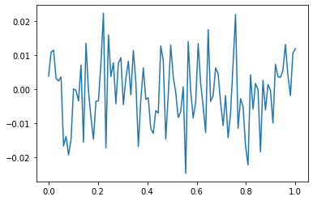

강의영상
imports
CNN
CONV의 역할
- 2D 에서 이미지 처리파트 * CONV - MAXPOOL - CONV - MAXPOOL
- DNN 파트 * Flatten - Dense
- 데이터생성 (그냥 흑백대비 데이터)
<tf.Tensor: shape=(50, 25), dtype=float64, numpy=
array([[10., 10., 10., ..., 10., 10., 10.],
[10., 10., 10., ..., 10., 10., 10.],
[10., 10., 10., ..., 10., 10., 10.],
...,
[10., 10., 10., ..., 10., 10., 10.],
[10., 10., 10., ..., 10., 10., 10.],
[10., 10., 10., ..., 10., 10., 10.]])><tf.Tensor: shape=(50, 25), dtype=float64, numpy=
array([[0., 0., 0., ..., 0., 0., 0.],
[0., 0., 0., ..., 0., 0., 0.],
[0., 0., 0., ..., 0., 0., 0.],
...,
[0., 0., 0., ..., 0., 0., 0.],
[0., 0., 0., ..., 0., 0., 0.],
[0., 0., 0., ..., 0., 0., 0.]])><tf.Tensor: shape=(50, 50), dtype=float64, numpy=
array([[10., 10., 10., ..., 0., 0., 0.],
[10., 10., 10., ..., 0., 0., 0.],
[10., 10., 10., ..., 0., 0., 0.],
...,
[10., 10., 10., ..., 0., 0., 0.],
[10., 10., 10., ..., 0., 0., 0.],
[10., 10., 10., ..., 0., 0., 0.]])><tf.Tensor: shape=(50, 50), dtype=float64, numpy=
array([[ 0.37129319, -0.22218732, 2.47718277, ..., 0.49074486,
0.83356932, 0.45569771],
[-0.71583146, -0.11528848, -1.54078337, ..., -1.10061299,
0.38703597, 0.10322716],
[ 1.52172142, 1.81161957, -0.16138102, ..., -1.27557782,
-0.39697905, 1.96703026],
...,
[ 1.34529249, -0.33572408, -1.13030603, ..., 0.84900934,
-1.70690337, -0.55816 ],
[-0.78912273, -1.80655893, 0.16310892, ..., 0.8075891 ,
-2.06762249, 0.84053733],
[-1.06669861, -0.04952165, 0.40685118, ..., -0.100907 ,
1.56423262, -1.63625911]])>- conv layer 생성
[<tf.Variable 'conv2d/kernel:0' shape=(2, 2, 1, 2) dtype=float32, numpy=
array([[[[ 0.4503097 , -0.6546046 ]],
[[ 0.53834134, 0.05130672]]],
[[[-0.34205168, 0.12724537]],
[[-0.39912695, 0.36518508]]]], dtype=float32)>,
<tf.Variable 'conv2d/bias:0' shape=(2,) dtype=float32, numpy=array([0., 0.], dtype=float32)>]- 가중치의 값을 확인해보자.
<tf.Variable 'conv2d/kernel:0' shape=(2, 2, 1, 2) dtype=float32, numpy=
array([[[[ 0.4503097 , -0.6546046 ]],
[[ 0.53834134, 0.05130672]]],
[[[-0.34205168, 0.12724537]],
[[-0.39912695, 0.36518508]]]], dtype=float32)><tf.Variable 'conv2d/bias:0' shape=(2,) dtype=float32, numpy=array([0., 0.], dtype=float32)>- 필터값을 원하는 것으로 변경해보자.
array([[[[ 0.25, -1. ]],
[[ 0.25, 1. ]]],
[[[ 0.25, -1. ]],
[[ 0.25, 1. ]]]])[array([[[[ 0.25, -1. ]],
[[ 0.25, 1. ]]],
[[[ 0.25, -1. ]],
[[ 0.25, 1. ]]]], dtype=float32), array([0., 0.], dtype=float32)]- 첫번째는 평균을 구하는 필터
- 두번째는 엣지를 검출하는 필터
- 필터를 넣은 결과를 확인
<tf.Tensor: shape=(1, 49, 49), dtype=float32, numpy=
array([[[ 9.829496 , 10.149731 , 10.115938 , ..., -0.4450039 ,
0.1526843 , 0.44488257],
[10.625555 , 9.998542 , 9.816621 , ..., -1.199796 ,
-0.5965334 , 0.5150786 ],
[10.125448 , 9.55331 , 9.920209 , ..., -0.09245254,
-0.50081515, -0.37436587],
...,
[10.242724 , 10.06068 , 9.8106785 , ..., 0.59299064,
0.25008035, -0.6558946 ],
[ 9.603472 , 9.22263 , 9.8764715 , ..., 0.17234075,
-0.52948177, -0.8730371 ],
[ 9.072025 , 9.678471 , 9.743685 , ..., -0.26665327,
0.05082306, -0.3247779 ]]], dtype=float32)><tf.Tensor: shape=(1, 49, 49), dtype=float32, numpy=
array([[[ 7.0648193e-03, 1.2738743e+00, -1.4090481e+00, ...,
5.6027925e-01, 1.8304735e+00, -6.6168052e-01],
[ 8.9044189e-01, -3.3984947e+00, 2.6708107e+00, ...,
4.6802759e-02, 2.3662477e+00, 2.0802004e+00],
[ 1.2678986e+00, -3.5564499e+00, 5.0240440e+00, ...,
-5.1247388e-01, -1.1209767e+00, 1.6267738e+00],
...,
[-8.2698441e-01, 9.8808289e-02, -1.0988159e+00, ...,
2.4145689e+00, -3.7862101e+00, 1.6231036e-01],
[-2.6984520e+00, 1.1750851e+00, 1.4402809e+00, ...,
2.6238339e+00, -5.4311242e+00, 4.0569029e+00],
[-2.5749207e-04, 2.4260387e+00, -2.1651821e+00, ...,
2.4799771e+00, -1.2100719e+00, -2.9233193e-01]]], dtype=float32)>- 각 채널을 시각화
- 2사분면: 원래이미지
- 3사분면: 원래이미지 -> 평균을 의미하는 conv적용
- 4사분면: 원래이미지 -> 엣지를 검출하는 conv적용
- conv(XXX)의 각 채널에 한번더 conv를 통과시켜보자
conv(XXX0.reshape(1,49,49,1))[...,0] ### XXX0 -> 평균필터 <=> XXX -> 평균필터 -> 평균필터
conv(XXX0.reshape(1,49,49,1))[...,1] ### XXX0 -> 엣지필터 <=> XXX -> 평균필터 -> 엣지필터
conv(XXX1.reshape(1,49,49,1))[...,0] ### XXX1 -> 평균필터 <=> XXX -> 엣지필터 -> 평균필터
conv(XXX1.reshape(1,49,49,1))[...,1] ### XXX1 -> 엣지필터 <=> XXX -> 엣지필터 -> 엣지필터 <tf.Tensor: shape=(1, 48, 48), dtype=float32, numpy=
array([[[ -3.0221272 , 3.386383 , -4.2654552 , ..., -1.2773508 ,
3.5896392 , -2.778201 ],
[ -9.113285 , 14.649799 , -11.062517 , ..., -2.4062634 ,
1.710942 , 2.4617033 ],
[ -5.9759903 , 10.901724 , -7.9709587 , ..., -2.7940087 ,
-0.18495584, 1.7879481 ],
...,
[ 2.469574 , -3.258545 , 4.4745617 , ..., 6.023678 ,
-9.406242 , 3.7584436 ],
[ 4.7993298 , -0.93242836, -5.0819206 , ..., 7.839739 ,
-14.255737 , 13.436548 ],
[ 6.2998333 , -4.326025 , -2.8787212 , ..., 9.661198 ,
-11.7450075 , 10.405767 ]]], dtype=float32)>ax[2][0].imshow(conv(XXX0.reshape(1,49,49,1))[...,0].reshape(48,48),cmap='gray') # 원래이미지 -> 평균필터 -> 평균필터
ax[2][1].imshow(conv(XXX0.reshape(1,49,49,1))[...,1].reshape(48,48),cmap='gray') # 원래이미지 -> 평균필터 -> 엣지필터
ax[2][2].imshow(conv(XXX1.reshape(1,49,49,1))[...,0].reshape(48,48),cmap='gray') # 원래이미지 -> 엣지필터 -> 평균필터
ax[2][3].imshow(conv(XXX1.reshape(1,49,49,1))[...,1].reshape(48,48),cmap='gray') # 원래이미지 -> 엣지필터 -> 엣지필터- 요약 - conv의 weight에 따라서 엣지를 검출하는 필터가 만들어지기도 하고 스무딩의 역할을 하는 필터가 만들어지기도 한다. 그리고 우리는 의미를 알 수 없지만 어떠한 역할을 하는 필터가 만들어질 것이다. - 이것들을 조합하다보면 우연히 이미지를 분류하기에 유리한 특징을 뽑아내는 weight가 맞춰질 수도 있겠다. - 컨볼루션 레이어의 역할은 이미지의 특징을 추출한다. - 채널수를 많이 만들고 다양한 웨이트 조합을 실험하다보면 보다 복잡한 이미지의 특징을 추출할 수 도있다.
- 우리가 설정한 에지는 수직선 에지를 찾는데 유리하다.
- 아래와 같은 이미지에서 설정한 에지에서 적절한 경계를 찾는것이 힘들다
- 참고: 스트라이드, 패딩 - 스트라이드: 컨볼루션을 수행할 때 윈도우가 1칸씩 이동하는 것이 아니라 2~3칸씩 이동함 - 패딩: 이미지의 가장자리에 정당한 값을 넣어서 (예를들어 0) 컨볼루션을 수행. 따라서 컨볼루션 연산 이후에도 이미지의 크기가 줄어들지 않도록 방지한다.
MAXPOOL
- 기본적역할: 이미지의 크기를 줄이는 것 - 이미지의 크기를 줄여야하는 이유? 어차피 최종적으로 출력값을 클래스 개수 (ex. 10차원)으로 줄어야하므로 - 이미지의 크기를 줄이면서도 동시에 아주 크리티컬한 특징은 손실없이 유지하고 싶다~
- 점점 작은 이미지가 되면서 중요한 특징들은 살아남지만 그렇지 않으면 죽는다. (캐리커쳐 느낌)
- 평균이 아니라 max를 쓴 이유는? 그냥 평균보다 나을것이라고 생각했음.. - 그런데 사실은 꼭 그렇지만은 않아서 최근에는 꼭 맥스풀링을 고집하진 않는 추세 (평균풀링도 많이씀)
CNN 아키텍처의 표현방법
- 아래와 같이 아키텍처의 다이어그램형태로 표현하고 굳이 노드별로 이미지를 그리진 않음

- 물론 아래와 같이 그리는 경우도 있음

Discusstion about CNN
- 격자형태로 배열된 자료를 처리하는데 특화된 신경망이다. - 시계열 (1차원격자), 이미지 (2차원격자)
- 실제응용에서 엄청난 성공을 거두었다.
- 이름의 유래는 컨볼루션이라는 수학적 연산을 사용했기 때문 - 컨볼루션은 조금 특별한 선형변환이다.
- 신경과학의 원리가 심층학습에 영향을 미친 사례이다.
CNN의 모티브
- 희소성 + 매개변수의 공유 - 다소 철학적인 모티브임 - 희소성: 이미지를 분석하여 특징을 뽑아낼때 부분부분의 특징만 뽑으면 된다는 의미 - 매개변수의 공유: 한 채널에는 하나의 역할을 하는 커널을 설계하면 된다는 의미 (스무딩이든 엣징이든). 즉 어떤지역은 스무딩, 어떤지역은 엣징을 할 필요가 없이 한채널에서는 엣징만, 다른채널에서는 스무딩만 수행한뒤 여러채널을 조합해서 이해하면 된다.
- 매개변수 공유효과로 인해서 파라메터가 확 줄어든다.
(예시) (1,6,6,1) -> (1,5,5,2) - MLP방식이면 (36,50) 의 차원을 가진 매트릭스가 필요함 => 1800개의 매개변수 필요 - CNN은 8개의 매개변수 필요
CNN 신경망의 기본구조
- 기본유닛 - conv - activation - pooling - conv - conv - activation - pooling
모형의 성능을 올리기 위한 노력들
dropout
- 아래의 예제를 복습하자.
np.random.seed(43052)
x = np.linspace(0,1,100).reshape(100,1)
y = np.random.normal(loc=0,scale=0.01,size=(100,1))
plt.plot(x,y)
tf.random.set_seed(43052)
net = tf.keras.Sequential()
net.add(tf.keras.layers.Dense(2048,activation='relu'))
net.add(tf.keras.layers.Dense(1))
net.compile(loss='mse',optimizer='adam')
net.fit(x,y,epochs=5000,verbose=0,batch_size=100)2022-05-23 19:33:01.211991: I tensorflow/stream_executor/cuda/cuda_gpu_executor.cc:939] successful NUMA node read from SysFS had negative value (-1), but there must be at least one NUMA node, so returning NUMA node zero<keras.callbacks.History at 0x7f1b9528feb0>- train/test로 나누어서 생각해보자.
tf.random.set_seed(43052)
net = tf.keras.Sequential()
net.add(tf.keras.layers.Dense(2048,activation='relu'))
net.add(tf.keras.layers.Dense(1))
net.compile(loss='mse',optimizer='adam')
net.fit(x[:80],y[:80],epochs=5000,verbose=0,batch_size=80)<keras.callbacks.History at 0x7f1b881f9840>_files/figure-html/cell-41-output-1.png)
- train에서 추세를 따라가는게 좋은게 아니다 \(\to\) 그냥 직선으로 핏하는거 이외에는 다 오버핏이다.
- 매 에폭마다 적당히 80%의 노드들을 빼고 학습하자 \(\to\) 너무 잘 학습되는 문제는 생기지 않을 것이다 (과적합이 방지될것이다?)
tf.random.set_seed(43052)
net = tf.keras.Sequential()
net.add(tf.keras.layers.Dense(2048,activation='relu'))
net.add(tf.keras.layers.Dropout(0.8))
net.add(tf.keras.layers.Dense(1))
net.compile(loss='mse',optimizer='adam')
net.fit(x[:80],y[:80],epochs=5000,verbose=0,batch_size=80)<keras.callbacks.History at 0x7f1b80381a50>- 드랍아웃에 대한 summary - 직관: 특정노드를 랜덤으로 off시키면 학습이 방해되어 오히려 과적합이 방지되는 효과가 있다 (그렇지만 진짜 중요한 특징이라면 랜덤으로 off 되더라도 어느정도는 학습될 듯) - note: 드랍아웃을 쓰면 오버핏이 줄어드는건 맞지만 완전히 없어지는건 아니다. - note: 오버핏을 줄이는 유일한 방법이 드랍아웃만 있는것도 아니며, 드랍아웃이 오버핏을 줄이는 가장 효과적인 방법도 아니다 (최근에는 dropout보다 batch nomalization을 사용하는 추세임)
train / val / test
- data
Downloading data from https://storage.googleapis.com/tensorflow/tf-keras-datasets/train-labels-idx1-ubyte.gz
32768/29515 [=================================] - 0s 0us/step
40960/29515 [=========================================] - 0s 0us/step
Downloading data from https://storage.googleapis.com/tensorflow/tf-keras-datasets/train-images-idx3-ubyte.gz
26427392/26421880 [==============================] - 0s 0us/step
26435584/26421880 [==============================] - 0s 0us/step
Downloading data from https://storage.googleapis.com/tensorflow/tf-keras-datasets/t10k-labels-idx1-ubyte.gz
16384/5148 [===============================================================================================] - 0s 0us/step
Downloading data from https://storage.googleapis.com/tensorflow/tf-keras-datasets/t10k-images-idx3-ubyte.gz
4423680/4422102 [==============================] - 0s 0us/step
4431872/4422102 [==============================] - 0s 0us/step[PhysicalDevice(name='/physical_device:GPU:0', device_type='GPU')]#collapse_output
cb1 = tf.keras.callbacks.TensorBoard()
net.fit(X,y,epochs=5,batch_size=200,validation_split=0.2,callbacks=cb1,verbose=1) Epoch 1/5
240/240 [==============================] - 1s 3ms/step - loss: 0.0677 - accuracy: 0.9765 - val_loss: 0.6648 - val_accuracy: 0.8743
Epoch 2/5
240/240 [==============================] - 1s 3ms/step - loss: 0.0685 - accuracy: 0.9769 - val_loss: 0.6766 - val_accuracy: 0.8745
Epoch 3/5
240/240 [==============================] - 1s 3ms/step - loss: 0.0702 - accuracy: 0.9748 - val_loss: 0.6618 - val_accuracy: 0.8766
Epoch 4/5
240/240 [==============================] - 1s 3ms/step - loss: 0.0647 - accuracy: 0.9778 - val_loss: 0.6751 - val_accuracy: 0.8758
Epoch 5/5
240/240 [==============================] - 1s 3ms/step - loss: 0.0659 - accuracy: 0.9775 - val_loss: 0.6805 - val_accuracy: 0.8746<keras.callbacks.History at 0x7fdf70127910>- 텐서보드 여는 방법1
Output hidden; open in https://colab.research.google.com to view.프로세스 죽이기
폴더안에 파일 지우기
(참고사항) 파이썬 3.10의 경우 아래의 수정이 필요
?/python3.10/site-packages/tensorboard/_vendor/html5lib/_trie/_base.py 을 열고
와 같이 수정한다.
- 왜냐하면 파이썬 3.10부터
from collections import Mapping가 동작하지 않고from collections.abc import Mapping가 동작하도록 문법이 바뀜
- 텐서보드를 실행하는 방법2
조기종료
- 텐서보드를 살펴보니 특정에폭 이후에는 오히려 과적합이 진행되는 듯 하다 (학습할수록 손해인듯 하다) \(\to\) 그 특정에폭까지만 학습해보자
tf.random.set_seed(43052)
net = tf.keras.Sequential()
net.add(tf.keras.layers.Flatten())
net.add(tf.keras.layers.Dense(5000,activation='relu')) ## 과적합좀 시키려고
net.add(tf.keras.layers.Dense(5000,activation='relu')) ## 레이어를 2장만듬 + 레이어하나당 노드수도 증가
net.add(tf.keras.layers.Dense(10,activation='softmax'))
net.compile(optimizer='adam',loss=tf.losses.categorical_crossentropy,metrics='accuracy')#
#cb1 = tf.keras.callbacks.TensorBoard()
cb2 = tf.keras.callbacks.EarlyStopping(patience=1) # val-loss가 1회증가하면 멈추어라
net.fit(X,y,epochs=200,batch_size=200,validation_split=0.2,callbacks=cb2,verbose=1) Epoch 1/200
240/240 [==============================] - 1s 4ms/step - loss: 0.5483 - accuracy: 0.8134 - val_loss: 0.4027 - val_accuracy: 0.8546
Epoch 2/200
240/240 [==============================] - 1s 3ms/step - loss: 0.3568 - accuracy: 0.8671 - val_loss: 0.3531 - val_accuracy: 0.8712
Epoch 3/200
240/240 [==============================] - 1s 3ms/step - loss: 0.3210 - accuracy: 0.8799 - val_loss: 0.3477 - val_accuracy: 0.8733
Epoch 4/200
240/240 [==============================] - 1s 3ms/step - loss: 0.2971 - accuracy: 0.8876 - val_loss: 0.3502 - val_accuracy: 0.8776<keras.callbacks.History at 0x7f1b80086650>#
#cb1 = tf.keras.callbacks.TensorBoard()
cb2 = tf.keras.callbacks.EarlyStopping(patience=1) # val-loss가 1회증가하면 멈추어라
net.fit(X,y,epochs=200,batch_size=200,validation_split=0.2,callbacks=cb2,verbose=1) Epoch 1/200
240/240 [==============================] - 1s 3ms/step - loss: 0.2791 - accuracy: 0.8935 - val_loss: 0.3224 - val_accuracy: 0.8820
Epoch 2/200
240/240 [==============================] - 1s 3ms/step - loss: 0.2619 - accuracy: 0.8999 - val_loss: 0.3498 - val_accuracy: 0.8779<keras.callbacks.History at 0x7f1b24290a90>#
#cb1 = tf.keras.callbacks.TensorBoard()
cb2 = tf.keras.callbacks.EarlyStopping(patience=1) # val-loss가 1회증가하면 멈추어라
net.fit(X,y,epochs=200,batch_size=200,validation_split=0.2,callbacks=cb2,verbose=1) Epoch 1/200
240/240 [==============================] - 1s 3ms/step - loss: 0.2491 - accuracy: 0.9043 - val_loss: 0.3641 - val_accuracy: 0.8711
Epoch 2/200
240/240 [==============================] - 1s 3ms/step - loss: 0.2328 - accuracy: 0.9110 - val_loss: 0.3282 - val_accuracy: 0.8848
Epoch 3/200
240/240 [==============================] - 1s 3ms/step - loss: 0.2254 - accuracy: 0.9151 - val_loss: 0.3280 - val_accuracy: 0.8843
Epoch 4/200
240/240 [==============================] - 1s 3ms/step - loss: 0.2144 - accuracy: 0.9177 - val_loss: 0.3191 - val_accuracy: 0.8925
Epoch 5/200
240/240 [==============================] - 1s 3ms/step - loss: 0.2074 - accuracy: 0.9223 - val_loss: 0.3152 - val_accuracy: 0.8949
Epoch 6/200
240/240 [==============================] - 1s 3ms/step - loss: 0.1952 - accuracy: 0.9250 - val_loss: 0.3322 - val_accuracy: 0.8863<keras.callbacks.History at 0x7f1b242c1660>#
#cb1 = tf.keras.callbacks.TensorBoard()
cb2 = tf.keras.callbacks.EarlyStopping(patience=1) # val-loss가 1회증가하면 멈추어라
net.fit(X,y,epochs=200,batch_size=200,validation_split=0.2,callbacks=cb2,verbose=1) Epoch 1/200
240/240 [==============================] - 1s 3ms/step - loss: 0.1908 - accuracy: 0.9257 - val_loss: 0.3513 - val_accuracy: 0.8836
Epoch 2/200
240/240 [==============================] - 1s 3ms/step - loss: 0.1799 - accuracy: 0.9304 - val_loss: 0.3376 - val_accuracy: 0.8901
Epoch 3/200
240/240 [==============================] - 1s 3ms/step - loss: 0.1712 - accuracy: 0.9346 - val_loss: 0.3568 - val_accuracy: 0.8894<keras.callbacks.History at 0x7f1b24302230>#
#cb1 = tf.keras.callbacks.TensorBoard()
cb2 = tf.keras.callbacks.EarlyStopping(patience=1) # val-loss가 1회증가하면 멈추어라
net.fit(X,y,epochs=200,batch_size=200,validation_split=0.2,callbacks=cb2,verbose=1) Epoch 1/200
240/240 [==============================] - 1s 3ms/step - loss: 0.1591 - accuracy: 0.9367 - val_loss: 0.3995 - val_accuracy: 0.8780
Epoch 2/200
240/240 [==============================] - 1s 3ms/step - loss: 0.1552 - accuracy: 0.9398 - val_loss: 0.3469 - val_accuracy: 0.8917
Epoch 3/200
240/240 [==============================] - 1s 3ms/step - loss: 0.1481 - accuracy: 0.9423 - val_loss: 0.3726 - val_accuracy: 0.8853<keras.callbacks.History at 0x7f1b24136e00>- 몇 번 좀 참았다가 멈추면 좋겠다.
tf.random.set_seed(43052)
net = tf.keras.Sequential()
net.add(tf.keras.layers.Flatten())
net.add(tf.keras.layers.Dense(5000,activation='relu')) ## 과적합좀 시키려고
net.add(tf.keras.layers.Dense(5000,activation='relu')) ## 레이어를 2장만듬 + 레이어하나당 노드수도 증가
net.add(tf.keras.layers.Dense(10,activation='softmax'))
net.compile(optimizer='adam',loss=tf.losses.categorical_crossentropy,metrics='accuracy')#
#cb1 = tf.keras.callbacks.TensorBoard()
cb2 = tf.keras.callbacks.EarlyStopping(patience=5) # 좀더 참다가 멈추어라
net.fit(X,y,epochs=200,batch_size=200,validation_split=0.2,callbacks=cb2,verbose=1) Epoch 1/200
240/240 [==============================] - 1s 4ms/step - loss: 0.5475 - accuracy: 0.8139 - val_loss: 0.4219 - val_accuracy: 0.8453
Epoch 2/200
240/240 [==============================] - 1s 3ms/step - loss: 0.3575 - accuracy: 0.8676 - val_loss: 0.3647 - val_accuracy: 0.8712
Epoch 3/200
240/240 [==============================] - 1s 3ms/step - loss: 0.3219 - accuracy: 0.8792 - val_loss: 0.3559 - val_accuracy: 0.8710
Epoch 4/200
240/240 [==============================] - 1s 3ms/step - loss: 0.2990 - accuracy: 0.8883 - val_loss: 0.3448 - val_accuracy: 0.8808
Epoch 5/200
240/240 [==============================] - 1s 3ms/step - loss: 0.2759 - accuracy: 0.8966 - val_loss: 0.3337 - val_accuracy: 0.8792
Epoch 6/200
240/240 [==============================] - 1s 3ms/step - loss: 0.2621 - accuracy: 0.9004 - val_loss: 0.3220 - val_accuracy: 0.8841
Epoch 7/200
240/240 [==============================] - 1s 3ms/step - loss: 0.2478 - accuracy: 0.9074 - val_loss: 0.3302 - val_accuracy: 0.8858
Epoch 8/200
240/240 [==============================] - 1s 3ms/step - loss: 0.2342 - accuracy: 0.9110 - val_loss: 0.3150 - val_accuracy: 0.8904
Epoch 9/200
240/240 [==============================] - 1s 3ms/step - loss: 0.2261 - accuracy: 0.9144 - val_loss: 0.3117 - val_accuracy: 0.8932
Epoch 10/200
240/240 [==============================] - 1s 3ms/step - loss: 0.2116 - accuracy: 0.9200 - val_loss: 0.3345 - val_accuracy: 0.8888
Epoch 11/200
240/240 [==============================] - 1s 3ms/step - loss: 0.2081 - accuracy: 0.9207 - val_loss: 0.3344 - val_accuracy: 0.8867
Epoch 12/200
240/240 [==============================] - 1s 3ms/step - loss: 0.1956 - accuracy: 0.9255 - val_loss: 0.3158 - val_accuracy: 0.8975
Epoch 13/200
240/240 [==============================] - 1s 3ms/step - loss: 0.1863 - accuracy: 0.9275 - val_loss: 0.3302 - val_accuracy: 0.8934
Epoch 14/200
240/240 [==============================] - 1s 3ms/step - loss: 0.1764 - accuracy: 0.9324 - val_loss: 0.3717 - val_accuracy: 0.8859<keras.callbacks.History at 0x7f1b24301960>- 텐서보드로 그려보자?
- 조기종료와 텐서보드를 같이 쓰려면?
cb1 = tf.keras.callbacks.TensorBoard()
cb2 = tf.keras.callbacks.EarlyStopping(patience=7) # 좀더 참다가 멈추어라
net.fit(X,y,epochs=200,batch_size=200,validation_split=0.2,callbacks=[cb1,cb2]) Epoch 1/200
240/240 [==============================] - 0s 1ms/step - loss: 0.7184 - accuracy: 0.7581 - val_loss: 0.5077 - val_accuracy: 0.8276
Epoch 2/200
240/240 [==============================] - 0s 890us/step - loss: 0.4752 - accuracy: 0.8386 - val_loss: 0.4793 - val_accuracy: 0.8342
Epoch 3/200
240/240 [==============================] - 0s 899us/step - loss: 0.4304 - accuracy: 0.8517 - val_loss: 0.4386 - val_accuracy: 0.8497
Epoch 4/200
240/240 [==============================] - 0s 880us/step - loss: 0.4048 - accuracy: 0.8582 - val_loss: 0.4029 - val_accuracy: 0.8603
Epoch 5/200
240/240 [==============================] - 0s 923us/step - loss: 0.3832 - accuracy: 0.8669 - val_loss: 0.3932 - val_accuracy: 0.8619
Epoch 6/200
240/240 [==============================] - 0s 934us/step - loss: 0.3697 - accuracy: 0.8705 - val_loss: 0.3842 - val_accuracy: 0.8657
Epoch 7/200
240/240 [==============================] - 0s 900us/step - loss: 0.3569 - accuracy: 0.8759 - val_loss: 0.3844 - val_accuracy: 0.8668
Epoch 8/200
240/240 [==============================] - 0s 889us/step - loss: 0.3482 - accuracy: 0.8774 - val_loss: 0.3679 - val_accuracy: 0.8708
Epoch 9/200
240/240 [==============================] - 0s 912us/step - loss: 0.3387 - accuracy: 0.8799 - val_loss: 0.3602 - val_accuracy: 0.8719
Epoch 10/200
240/240 [==============================] - 0s 923us/step - loss: 0.3299 - accuracy: 0.8820 - val_loss: 0.3610 - val_accuracy: 0.8748
Epoch 11/200
240/240 [==============================] - 0s 853us/step - loss: 0.3229 - accuracy: 0.8858 - val_loss: 0.3574 - val_accuracy: 0.8717
Epoch 12/200
240/240 [==============================] - 0s 904us/step - loss: 0.3157 - accuracy: 0.8873 - val_loss: 0.3572 - val_accuracy: 0.8743
Epoch 13/200
240/240 [==============================] - 0s 890us/step - loss: 0.3106 - accuracy: 0.8899 - val_loss: 0.3545 - val_accuracy: 0.8761
Epoch 14/200
240/240 [==============================] - 0s 911us/step - loss: 0.3046 - accuracy: 0.8914 - val_loss: 0.3493 - val_accuracy: 0.8759
Epoch 15/200
240/240 [==============================] - 0s 921us/step - loss: 0.3011 - accuracy: 0.8928 - val_loss: 0.3483 - val_accuracy: 0.8776
Epoch 16/200
240/240 [==============================] - 0s 937us/step - loss: 0.2988 - accuracy: 0.8935 - val_loss: 0.3733 - val_accuracy: 0.8716
Epoch 17/200
240/240 [==============================] - 0s 892us/step - loss: 0.2925 - accuracy: 0.8947 - val_loss: 0.3481 - val_accuracy: 0.8768
Epoch 18/200
240/240 [==============================] - 0s 933us/step - loss: 0.2880 - accuracy: 0.8951 - val_loss: 0.3396 - val_accuracy: 0.8801
Epoch 19/200
240/240 [==============================] - 0s 957us/step - loss: 0.2827 - accuracy: 0.8982 - val_loss: 0.3439 - val_accuracy: 0.8798
Epoch 20/200
240/240 [==============================] - 0s 881us/step - loss: 0.2791 - accuracy: 0.8986 - val_loss: 0.3489 - val_accuracy: 0.8779
Epoch 21/200
240/240 [==============================] - 0s 886us/step - loss: 0.2765 - accuracy: 0.9007 - val_loss: 0.3350 - val_accuracy: 0.8823
Epoch 22/200
240/240 [==============================] - 0s 912us/step - loss: 0.2709 - accuracy: 0.9016 - val_loss: 0.3350 - val_accuracy: 0.8812
Epoch 23/200
240/240 [==============================] - 0s 908us/step - loss: 0.2688 - accuracy: 0.9029 - val_loss: 0.3374 - val_accuracy: 0.8820
Epoch 24/200
240/240 [==============================] - 0s 930us/step - loss: 0.2658 - accuracy: 0.9041 - val_loss: 0.3445 - val_accuracy: 0.8805
Epoch 25/200
240/240 [==============================] - 0s 872us/step - loss: 0.2607 - accuracy: 0.9058 - val_loss: 0.3383 - val_accuracy: 0.8822
Epoch 26/200
240/240 [==============================] - 0s 928us/step - loss: 0.2607 - accuracy: 0.9056 - val_loss: 0.3415 - val_accuracy: 0.8811
Epoch 27/200
240/240 [==============================] - 0s 927us/step - loss: 0.2576 - accuracy: 0.9068 - val_loss: 0.3402 - val_accuracy: 0.8814
Epoch 28/200
240/240 [==============================] - 0s 905us/step - loss: 0.2525 - accuracy: 0.9098 - val_loss: 0.3469 - val_accuracy: 0.8802<keras.callbacks.History at 0x7f1b24217a00>하이퍼파라메터 선택
- 하이퍼파라메터 설정
313/313 [==============================] - 0s 859us/step - loss: 0.3803 - accuracy: 0.8704!rm -rf logs
for u in [50,5000]:
for d in [0.0,0.5]:
for o in ['adam','sgd']:
logdir = 'logs/hpguebin_{}_{}_{}'.format(u,d,o)
with tf.summary.create_file_writer(logdir).as_default():
net = tf.keras.Sequential()
net.add(tf.keras.layers.Flatten())
net.add(tf.keras.layers.Dense(u,activation='relu'))
net.add(tf.keras.layers.Dropout(d))
net.add(tf.keras.layers.Dense(10,activation='softmax'))
net.compile(optimizer=o,loss=tf.losses.categorical_crossentropy,metrics=['accuracy','Recall'])
cb3 = hp.KerasCallback(logdir, {'유닛수':u, '드랍아웃비율':d, '옵티마이저':o})
net.fit(X,y,epochs=3,callbacks=cb3)
_rslt=net.evaluate(XX,yy)
_mymetric=_rslt[1]*0.8 + _rslt[2]*0.2
tf.summary.scalar('애큐러시와리컬의가중평균(테스트셋)', _mymetric, step=1) Epoch 1/3
1875/1875 [==============================] - 2s 1ms/step - loss: 0.5255 - accuracy: 0.8180 - recall: 0.7546
Epoch 2/3
1875/1875 [==============================] - 2s 1ms/step - loss: 0.3993 - accuracy: 0.8588 - recall: 0.8294
Epoch 3/3
1875/1875 [==============================] - 2s 1ms/step - loss: 0.3648 - accuracy: 0.8698 - recall: 0.8443
313/313 [==============================] - 0s 830us/step - loss: 0.4063 - accuracy: 0.8545 - recall: 0.8286
Epoch 1/3
1875/1875 [==============================] - 2s 1ms/step - loss: 0.7744 - accuracy: 0.7503 - recall: 0.5797
Epoch 2/3
1875/1875 [==============================] - 2s 1ms/step - loss: 0.5204 - accuracy: 0.8223 - recall: 0.7565
Epoch 3/3
1875/1875 [==============================] - 2s 1ms/step - loss: 0.4742 - accuracy: 0.8369 - recall: 0.7859
313/313 [==============================] - 0s 828us/step - loss: 0.4899 - accuracy: 0.8304 - recall: 0.7831
Epoch 1/3
1875/1875 [==============================] - 2s 1ms/step - loss: 0.7502 - accuracy: 0.7356 - recall: 0.6115
Epoch 2/3
1875/1875 [==============================] - 2s 1ms/step - loss: 0.5738 - accuracy: 0.7923 - recall: 0.7133
Epoch 3/3
1875/1875 [==============================] - 2s 1ms/step - loss: 0.5473 - accuracy: 0.8037 - recall: 0.7321
313/313 [==============================] - 0s 865us/step - loss: 0.4319 - accuracy: 0.8448 - recall: 0.7919
Epoch 1/3
1875/1875 [==============================] - 2s 1ms/step - loss: 1.0932 - accuracy: 0.6228 - recall: 0.3971
Epoch 2/3
1875/1875 [==============================] - 2s 1ms/step - loss: 0.7616 - accuracy: 0.7388 - recall: 0.5956
Epoch 3/3
1875/1875 [==============================] - 2s 1ms/step - loss: 0.6828 - accuracy: 0.7684 - recall: 0.6478
313/313 [==============================] - 0s 894us/step - loss: 0.5265 - accuracy: 0.8180 - recall: 0.7353
Epoch 1/3
1875/1875 [==============================] - 2s 1ms/step - loss: 0.4777 - accuracy: 0.8292 - recall: 0.7890
Epoch 2/3
1875/1875 [==============================] - 2s 1ms/step - loss: 0.3603 - accuracy: 0.8682 - recall: 0.8427
Epoch 3/3
1875/1875 [==============================] - 2s 1ms/step - loss: 0.3197 - accuracy: 0.8817 - recall: 0.8605
313/313 [==============================] - 0s 846us/step - loss: 0.3803 - accuracy: 0.8628 - recall: 0.8428
Epoch 1/3
1875/1875 [==============================] - 2s 1ms/step - loss: 0.6685 - accuracy: 0.7883 - recall: 0.6444
Epoch 2/3
1875/1875 [==============================] - 2s 1ms/step - loss: 0.4815 - accuracy: 0.8372 - recall: 0.7781
Epoch 3/3
1875/1875 [==============================] - 2s 1ms/step - loss: 0.4408 - accuracy: 0.8498 - recall: 0.8021
313/313 [==============================] - 0s 859us/step - loss: 0.4634 - accuracy: 0.8390 - recall: 0.7962
Epoch 1/3
1875/1875 [==============================] - 2s 1ms/step - loss: 0.5708 - accuracy: 0.7991 - recall: 0.7556
Epoch 2/3
1875/1875 [==============================] - 2s 1ms/step - loss: 0.4418 - accuracy: 0.8393 - recall: 0.8057
Epoch 3/3
1875/1875 [==============================] - 2s 1ms/step - loss: 0.4091 - accuracy: 0.8514 - recall: 0.8211
313/313 [==============================] - 0s 850us/step - loss: 0.3937 - accuracy: 0.8587 - recall: 0.8238
Epoch 1/3
1875/1875 [==============================] - 2s 1ms/step - loss: 0.6930 - accuracy: 0.7752 - recall: 0.6338
Epoch 2/3
1875/1875 [==============================] - 2s 1ms/step - loss: 0.5048 - accuracy: 0.8274 - recall: 0.7651
Epoch 3/3
1875/1875 [==============================] - 2s 1ms/step - loss: 0.4608 - accuracy: 0.8417 - recall: 0.7910
313/313 [==============================] - 0s 854us/step - loss: 0.4625 - accuracy: 0.8396 - recall: 0.7957숙제
- 아래의 네트워크에서 옵티마이저를 adam, sgd를 선택하여 각각 적합시켜보고 testset의 loss를 성능비교를 하라. epoch은 5정도로 설정하라.
net = tf.keras.Sequential()
net.add(tf.keras.layers.Flatten())
net.add(tf.keras.layers.Dense(50,activation='relu'))
net.add(tf.keras.layers.Dense(50,activation='relu'))
net.add(tf.keras.layers.Dense(10,activation='softmax'))
net.compile(optimizer=???,loss=tf.losses.categorical_crossentropy,metrics=['accuracy','Recall'])